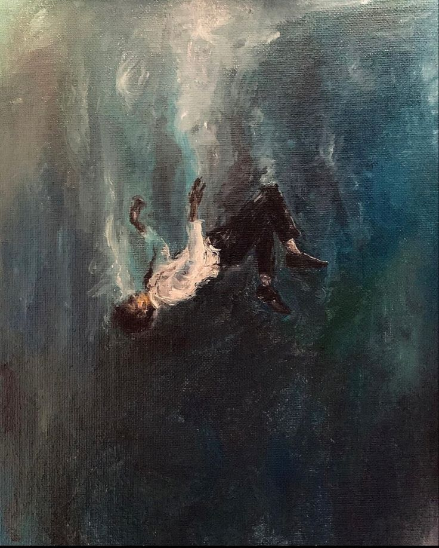
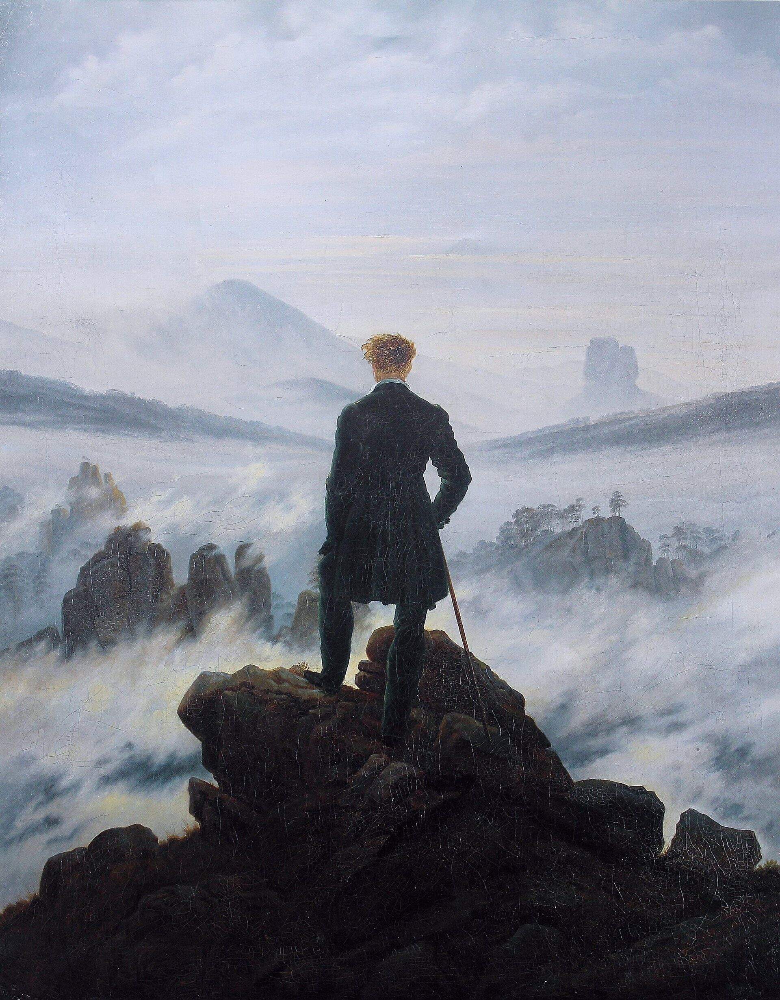

01 · Frases
“Tá sem grana?”
“Muito complexo, né?”
“Time não acompanha?”
Essas perguntas te botaram pra refletir? Não precisa mais pensar.

Para economizar no bolso de seus gastos mensais: uma tecnologia em infra agêntica, adequando sua operação à criação e à inovação. Por isso, a Renascença.
Clique no cartão para avançar
Cada cor saiu de cinco obras de referência e foi medida por dois algoritmos independentes. Sombras e névoa caem num único eixo de matiz, entre 271° e 338°.
Nas pinturas escuras de referência, o branco ocupa menos de 1% da tela (0,81% e 0,63%).
Cinco famílias de movimento: névoa, correnteza, pincelada, luz rasante e ascensão. Nada quica, nada gira.
Variables com modes: uma altitude por seção e por cartão. Interactions com GSAP para texto, reflexo e névoa. Um script curto para o baralho.
